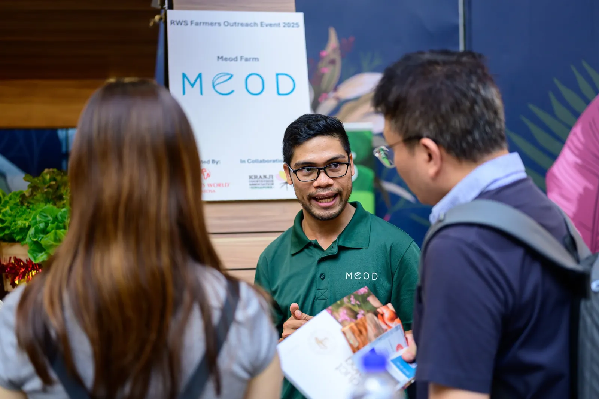

Certified under Singapore's SG Fresh Produce mark for locally grown, quality produce.

Our story
More than
More than
a farm
We keep working even as the last rooster retires to his pen. Our farmers take turns so the freshest crops leave the farm early each morning and reach you as fast as possible.
Our purpose
For the people, taste and planet we love
Tyllage is both participant and pioneer, built on the belief that technology can be human and that innovation guided by purpose can feed a nation.
We're farmers, scientists, educators and food lovers, working together to show Singapore that farming can be modern, sustainable and deeply personal.

For the people we love
Growing healthy vegetables to share with our families and the wider community.
For the good old taste
Asian greens grown for local palates: the wok-fried flavours we grew up with.
For the planet
Growing food for the nation without harming the earth, for this generation and the next.
Food security
Growing Singapore's future
Singapore imports over 90% of its food. Our demo farm models the kind of local effort that helps close that gap, sustainably and at scale. We pair hi-tech greenhouses with the wisdom of our forefathers, and support the Singapore Green Plan and the nation's 2035 farming targets.
A demo farm running on Tyllage, growing greens locally and at scale.
Pesticide-free, chemical-free and GMO-free produce — by design, not by accident.